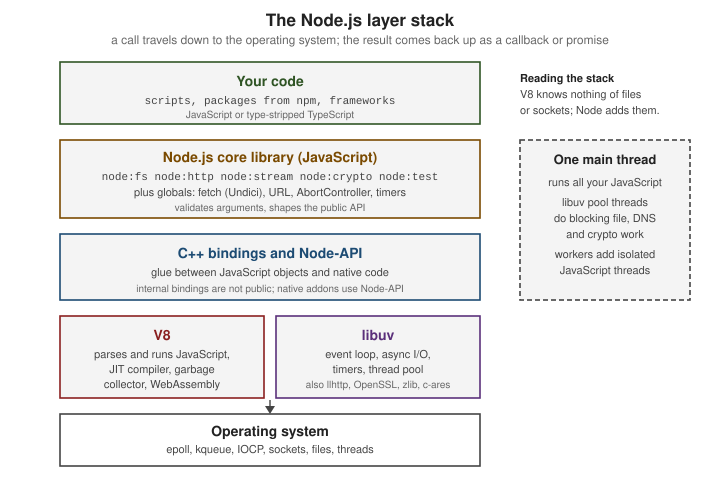

Introduction & Architecture
|
This content was generated with the assistance of AI and should be verified against the official documentation before being relied on in production. |
This page is written against Node.js 26 (26.10.0, which becomes LTS on 2026-10-28), with the differences on Node.js 24
"Krypton" (24.21.0, Active LTS) and Node.js 22 "Jod" (22.23.3, Maintenance) called out, all verified on 2026-10-03.
Everything it describes is Stable unless a stability level is named: fetch, node:http, node:fs, node:worker_threads
and the event loop are Stable, while URLPattern is Experimental (Stability 1) and Temporal is only enabled by default
from Node.js 26 (the table in What changed recently shows which line has what). The rest of the section
builds a small books/authors/reviews service, the Bookshelf, as its running scenario; this page explains the machine it
runs on.
What Node.js is
Node.js is an open-source, cross-platform JavaScript runtime environment. A runtime is a program that executes code written in a language and gives that code access to the world outside the language: files, sockets, processes, timers and the operating system. JavaScript itself has no such access; it only defines values, functions and control flow. Node.js supplies the missing part, so the same language that animates a web page can also read a file, listen on a port or run a command-line tool.
Two points are worth fixing early because they are the most common misconceptions:
-
Node.js is not a language. The code you write is JavaScript (or TypeScript, see TypeScript in Node.js); Node.js is the program that runs it.
-
Node.js is not a framework. It ships low-level building blocks (
node:http,node:fs,node:stream, a test runner, a package manager client) but no opinion about routing, validation, dependency injection or project layout. Frameworks such as Express and Fastify (see Web Frameworks: Express and Fastify) or NestJS (see NestJS Introduction & Architecture) are libraries that run on Node.js.
A short history
| When | What happened |
|---|---|
2008 |
Google open-sources V8 on 2 September 2008, the day Chrome launches. V8 compiled JavaScript to machine code instead of interpreting it, which is what made server-side JavaScript fast enough to be practical. |
2009 |
Ryan Dahl starts Node.js (the first commit in the |
2011 |
Node.js 0.6.0 (4 November 2011) adds native Windows support, using I/O completion ports for sockets instead of Cygwin. Node.js 0.6.3 (25 November 2011) is the first release that bundles npm, the package manager. |
2014 to 2015 |
A community fork called io.js moves faster than Node.js. The two code bases are merged under the Node.js Foundation, and Node.js 4.0.0 (8 September 2015) is the first release of the combined line; it also introduced the long-term-support (LTS) plan with a new major every six months. |
2018 and later |
ES modules, |
2026 |
Node.js 26 is the last line on the old two-releases-a-year cadence. From Node.js 27 there is one major release per year and every line becomes LTS (see Release Lines & LTS). |
Source: V8 blog: Celebrating 10 years of V8, Node.js changelog archive (0.1.0, 0.6.0, 0.6.3), Node.js blog: Node v0.6.0, Node.js blog: Node v4.0.0 and OpenJS Foundation: About
The dates above are the broad strokes; the point is the direction of travel. Node.js began as a way to write network servers in JavaScript and has become a general-purpose platform whose core now covers much of what used to require third-party packages.
Architecture
A running Node.js process is a single executable that links several components together. Knowing which component does what explains most of Node.js’s behaviour, including why it is fast at I/O, why a long loop freezes it, and which problems come from JavaScript and which from the operating system.

V8
V8 is Google’s open-source JavaScript and WebAssembly engine, written in C++. It parses JavaScript, compiles it to machine
code with a just-in-time (JIT) compiler, runs it, and manages memory with a garbage collector. V8 implements the ECMAScript
language (syntax, Promise, Map, classes, async/await, and so on) but nothing about files or networks. Chrome and
Node.js embed the same engine; the engine version Node.js ships determines which language features are available. Node.js 26
bundles V8 14.6, Node.js 24 bundles V8 13.6 and Node.js 22 bundles V8 12.4 (see the example below), so new syntax usually
reaches Node.js shortly after it reaches Chrome and is not tied to a Node.js release.
libuv
libuv is a C library, originally written for Node.js, that provides the event loop and cross-platform asynchronous I/O. On
Linux it wraps epoll, on macOS and BSD kqueue, and on Windows I/O completion ports, so Node.js code looks the same on all
of them. libuv also provides timers, TCP/UDP sockets, child-process handling, file-system operations and a thread pool
for work that the operating system cannot do asynchronously. The event loop itself is covered in
The Event Loop; here it is enough to know that libuv owns it.
C++ bindings
Between JavaScript and the C and C libraries sit the _bindings_: C code that exposes native functionality to JavaScript
through V8’s embedding API. When node:fs calls into the file system, a binding converts the JavaScript arguments, hands the
request to libuv, and later converts the result back into a JavaScript value and schedules your callback or resolves your
promise. These internal bindings are an implementation detail and are not public API. Native addons that need to reach
native code use Node-API (Stable), a C interface that stays binary-compatible across Node.js versions (see
Native Addons, WebAssembly & FFI).
The JavaScript core library
Most of what you import with the node: prefix is written in JavaScript and compiled into the executable: node:fs,
node:http, node:stream, node:events, node:path, node:util, node:test and many more. This layer validates
arguments, implements the public API shape (callbacks, promises, streams, events) and delegates the heavy lifting to bindings.
It is also where the Web-platform globals that Node.js adopted live: URL, TextEncoder, AbortController, EventTarget,
structuredClone, fetch, and others (see Globals & Web Platform APIs).
Undici and llhttp
Two HTTP-related components deserve a name because they appear in error messages and version tables:
-
llhttp is the HTTP/1.x parser used by
node:httpand by Undici. It is a small, generated C parser that replaced the olderhttp-parserlibrary; its strictness is part of the defence against request-smuggling attacks (see Server Timeouts, Limits & Hardening). -
Undici is the HTTP client that implements the global
fetch,Request,Response,Headers,FormDataandWebSocket(the client class), and which is also published on npm for direct use (see Fetch & HTTP Clients).node:httpandnode:httpsare a separate, older implementation that shares the llhttp parser.
Other native dependencies bundled in the executable include OpenSSL (TLS and node:crypto), zlib (node:zlib), c-ares
(asynchronous DNS), ICU (internationalisation) and SQLite (node:sqlite).
Inspecting the components of your build
process.versions lists the version of every bundled component, which is the quickest way to check what a given Node.js
build actually contains.
// versions.mjs
const { node, v8, uv, llhttp, undici, modules, napi, openssl, icu } = process.versions;
console.log({ node, v8, uv, llhttp, undici, modules, napi, openssl, icu });
console.log(process.release.name, process.release.lts ?? 'not LTS');Running it on the three supported lines (measured on 2026-10-03; modules is the native-addon ABI version):
{ node: '26.10.0', v8: '14.6.202.34-node.34', uv: '1.52.1', llhttp: '9.4.3', undici: '8.10.2', modules: '147', napi: '10', openssl: '3.5.8', icu: '78.3' }
node not LTS
{ node: '24.21.0', v8: '13.6.233.17-node.53', uv: '1.52.1', llhttp: '9.4.3', undici: '7.29.1', modules: '137', napi: '10', openssl: '3.5.8', icu: '78.3' }
node Krypton
{ node: '22.23.3', v8: '12.4.254.21-node.57', uv: '1.51.0', llhttp: '9.4.3', undici: '6.28.1', modules: '127', napi: '10', openssl: '3.5.8', icu: '78.3' }
node JodSource: The V8 JavaScript Engine
A first program that touches every layer
The classic first program is a web server. The listener below is JavaScript (your code), node:http is the core library,
the socket is created through a binding and libuv, and the request line is parsed by llhttp. The client side uses the
global fetch, which is Undici.
// hello.mjs
import { createServer } from 'node:http';
const server = createServer((req, res) => {
res.writeHead(200, { 'content-type': 'text/plain; charset=utf-8' });
res.end('Hello from the Bookshelf\n');
});
server.listen(0, '127.0.0.1', async () => {
const { port } = server.address();
const response = await fetch(`http://127.0.0.1:${port}/`);
console.log(response.status, await response.text());
server.close();
});200 Hello from the BookshelfSource: Introduction to Node.js
The non-blocking I/O model and the single main thread
Node.js runs your JavaScript on one main thread. There is no parallel execution of your callbacks: while one function runs, no other JavaScript function in the same thread can. That sounds like a limitation, and for CPU-heavy work it is, but it removes a whole class of problems (data races, locks, deadlocks on shared JavaScript objects) and makes server code easy to reason about.
The model that makes one thread useful is non-blocking I/O. A request to read a file, query a database or fetch a URL does not make the thread wait. Node.js hands the operation to the operating system or to libuv, registers a callback (or a promise), and returns to the event loop, which keeps running other callbacks. When the operation finishes, the callback is queued and the loop runs it. Waiting is therefore done by the operating system in parallel, and the single thread is only busy when it is actually executing JavaScript. A server spends nearly all its time waiting for the network and the disk, which is why one process can keep thousands of connections open.
The libuv thread pool
Not every operation has a non-blocking operating-system interface. File-system calls, dns.lookup() (which uses
getaddrinfo), and CPU-bound native work in node:crypto (pbkdf2, scrypt, randomBytes with a callback) and node:zlib
are executed by libuv on a pool of worker threads, four by default. The size is set with the UV_THREADPOOL_SIZE environment
variable, which must be set before the pool is first used. The JavaScript you wrote still runs on the main thread: only the
blocking system call is moved off it.
The example below starts eight password-hash computations. With the default pool of four, they complete in two waves.
// pool.mjs
import { pbkdf2 } from 'node:crypto';
const started = performance.now();
let done = 0;
for (let i = 0; i < 8; i++) {
pbkdf2('password', 'salt', 400_000, 64, 'sha512', () => {
console.log(`hash ${i} finished after ${Math.round(performance.now() - started)} ms`);
if (++done === 8) console.log('threadpool size:', process.env.UV_THREADPOOL_SIZE ?? '4 (default)');
});
}hash 3 finished after 68 ms
hash 2 finished after 69 ms
hash 0 finished after 69 ms
hash 1 finished after 70 ms
hash 4 finished after 135 ms
hash 5 finished after 137 ms
hash 6 finished after 137 ms
hash 7 finished after 137 ms
threadpool size: 4 (default)The two clusters, about 70 ms and about 137 ms, are the two waves of four. Running the same file with
UV_THREADPOOL_SIZE=8 node pool.mjs lets all eight run together (the measured finish times were then all between roughly 80
and 110 ms). Note that the hashing happens on pool threads in true parallel, while the callbacks are delivered one at a time
on the main thread.
Source: Introduction to Node.js
Who runs when: the order of callbacks
Because everything is queued, the order of output is determined by the event loop rather than by the order of lines. The
example mixes synchronous code, process.nextTick, a promise microtask, a file-read callback, setImmediate and a zero-delay
timer.
// order.mjs
import { readFile } from 'node:fs';
console.log('1 main script starts');
readFile(import.meta.filename, () => {
console.log('5 file read finished (callback runs on the main thread)');
setTimeout(() => console.log('7 timer (0 ms)'), 0);
setImmediate(() => console.log('6 setImmediate'));
});
Promise.resolve().then(() => console.log('4 promise microtask'));
process.nextTick(() => console.log('3 process.nextTick'));
console.log('2 main script ends');1 main script starts
2 main script ends
4 promise microtask
3 process.nextTick
5 file read finished (callback runs on the main thread)
6 setImmediate
7 timer (0 ms)The synchronous lines run first. Then the microtask queues are drained; in an ES module the promise microtask ran before the
nextTick callback, which is a property of how the module is evaluated, so do not rely on that relative order and prefer
queueMicrotask() (process.nextTick is Legacy since Node.js 22.7 and 20.18). Finally the loop moves on to I/O callbacks.
Inside an I/O callback setImmediate always runs before a zero-delay timer, whereas from the main script their order is not
guaranteed, which is why the example calls them from the file callback. The loop phases are explained in
The Event Loop.
Source: The Node.js Event Loop
What blocking costs
The flip side of a single thread is that synchronous CPU work stops everything else. Timers do not fire, sockets are not serviced and no request gets a response until the function returns.
// blocking.mjs
const tick = setInterval(() => console.log('tick'), 100);
setTimeout(() => {
const end = Date.now() + 350;
while (Date.now() < end) { /* busy loop blocks the only main thread */ }
console.log('blocked ~350 ms, no tick could run meanwhile');
}, 150);
setTimeout(() => clearInterval(tick), 600);tick
blocked ~350 ms, no tick could run meanwhile
tickWithout the busy loop the interval would have fired five times in 600 ms; with it, only two ticks appear. See Don’t Block the Event Loop for the practical rules.
Adding threads: worker threads
When CPU-bound JavaScript is unavoidable, node:worker_threads (Stable) runs additional JavaScript threads, each with its own
V8 isolate and event loop. Workers do not share JavaScript objects; they exchange messages (copied or transferred), and can
share raw memory through SharedArrayBuffer. The main thread stays free to serve requests.
// worker.mjs
import { Worker, isMainThread, threadId, parentPort, workerData } from 'node:worker_threads';
if (isMainThread) {
const worker = new Worker(import.meta.filename, { workerData: { n: 40 } });
worker.on('message', (value) => console.log(`main thread ${threadId} received`, value));
worker.on('exit', (code) => console.log('worker exited with code', code));
} else {
const fib = (n) => (n < 2 ? n : fib(n - 1) + fib(n - 2));
parentPort.postMessage({ threadId, fib: fib(workerData.n) });
}main thread 0 received { threadId: 1, fib: 102334155 }
worker exited with code 0Source: Don’t Block the Event Loop
The other ways to use more CPU cores are node:child_process (separate processes) and node:cluster (several processes
sharing a listening port); all three are compared in Concurrency Models and
detailed in Worker Threads and Cluster & Scaling.
Following one call down the stack
An await readFile(...) crosses every layer of the diagram. The JavaScript core library validates the path, a binding submits
a request to libuv, a pool thread performs the blocking read system call, and the result climbs back up to resolve the promise
on the main thread.
// stack.mjs
import { readFile } from 'node:fs/promises';
import { lookup } from 'node:dns/promises';
const started = performance.now();
const text = await readFile(import.meta.filename, 'utf8'); // fs binding, read(2) on the pool
const address = await lookup('localhost'); // getaddrinfo on the pool
console.log({ characters: text.length, address: address.address, ms: Math.round(performance.now() - started) });{ characters: 494, address: '::1', ms: 4 }Source: Introduction to Node.js
Tracing a file read and a socket through the layers
The same path can be followed in more detail. Take the callback form of fs.readFile():
-
Your code calls
readFile(path, callback). -
The JavaScript core library (
lib/fs.js) validates the arguments, converts the flags, and creates a request object (FSReqCallback, or the request type used by a newer implementation) that holds the callback. -
A C++ binding (
src/node_file.cc) receives the request, converts the JavaScript values into C values and calls a libuv function such asuv_fs_open()oruv_fs_read(). -
libuv cannot read a regular file without blocking, so it queues the work on its thread pool. A pool thread performs the blocking system call (
open,fstat,read,close) while the main thread keeps running other JavaScript. -
The operating system completes the call. libuv notices the finished work during the event loop’s poll phase.
-
Back up the stack: the binding converts the result to a
Bufferor an error and calls the request’s completion function, which runs your callback on the main thread.
A socket takes a different route at step 4. Network I/O has non-blocking operating-system interfaces, so libuv registers the
socket with epoll, kqueue or an I/O completion port and the pool is not involved; the thread pool is only for work that
the operating system cannot do asynchronously.
The objects that cross the binding layer can be observed. async_hooks.createHook() reports every native request and handle
that the C++ layer creates (its type names, such as FSREQCALLBACK, TCPWRAP and TCPSERVERWRAP, are the binding classes).
The API is Stability 1, Experimental, and the documentation asks you to migrate away from it for application code, but it
is the clearest window into this layer for a learning exercise.
// trace.mjs
import { createHook } from 'node:async_hooks';
import { readFile } from 'node:fs';
import { createServer, connect } from 'node:net';
// Record the native request and handle objects (the C++ binding layer) that each step creates.
// TickObject (process.nextTick) and PROMISE entries are JavaScript-level and are left out.
let created = [];
const hook = createHook({
init(asyncId, type) { if (type !== 'TickObject' && type !== 'PROMISE') created.push(type); },
});
hook.enable();
const report = (step) => { console.log(step.padEnd(28), created.join(' → ')); created = []; };
readFile(import.meta.filename, () => {
report('fs.readFile:');
const server = createServer((socket) => socket.end('hi\n'));
server.listen(0, '127.0.0.1', () => {
report('net server.listen:');
const client = connect(server.address().port, '127.0.0.1');
client.on('data', () => report('net connect + accept + data:'));
client.on('close', () => { report('net close:'); hook.disable(); server.close(); });
});
});fs.readFile: FSREQCALLBACK
net server.listen: DNSCHANNEL → TCPSERVERWRAP
net connect + accept + data: TCPWRAP → TCPCONNECTWRAP → TCPWRAP → SHUTDOWNWRAP
net close: SHUTDOWNWRAP
fs.readFile: FSREQCALLBACK → FSREQCALLBACK → FSREQCALLBACK → FSREQCALLBACK
net server.listen: DNSCHANNEL → TCPSERVERWRAP
net connect + accept + data: TCPWRAP → TCPCONNECTWRAP → TCPWRAP → SHUTDOWNWRAP
net close: SHUTDOWNWRAPReading the trace:
-
On Node.js 24 and 22 the callback
readFile()makes four separate trips to the thread pool, one request each for open, fstat, read and close. On Node.js 26.10.0 the source oflib/fs.jsperforms open, fstat, read and close "in one thread pool round trip" for files that fit in one chunk, so the trace shows a single request. The public API did not change; this is why the internal bindings are not a contract you should depend on. -
TCPSERVERWRAPis the listening socket and eachTCPWRAPis one end of a connection (the client’s, then the accepted one on the server).TCPCONNECTWRAPis the pendingconnect()request andSHUTDOWNWRAPthe half-close sent bysocket.end(). None of them involves the thread pool. -
DNSCHANNELis a c-ares resolver channel, created as the DNS machinery is first loaded; the trace shows it is created, not that a lookup took place (both addresses in the example are literal IPs).
Node.js versus the browser
Both environments run JavaScript on V8 (or, in Firefox and Safari, on another engine) and share the language, but the environment around the language is different.
| Aspect | Browser | Node.js |
|---|---|---|
Global object |
|
|
Page APIs |
DOM, |
None. No DOM, no rendering. Web Storage and |
System access |
Sandboxed: no free file or process access |
Full access to files, processes, network and environment (restrictable with the permission model) |
Module system |
ES modules only ( |
ES modules and CommonJS; |
Version control |
You cannot choose the user’s browser; you transpile and polyfill for the oldest target |
You choose the Node.js version, so you can use the newest language features your version supports |
Networking |
|
|
Concurrency |
Main thread (UI) plus Web Workers |
Main thread plus |
Lifetime |
Lives as long as the page |
Exits when the event loop has nothing left to do, or on |
The difference that matters most for the programmer is control. A browser app must run on whatever the visitor has; a Node.js
app runs on the version you install, so you can use new syntax without a build step. The same simplicity means Node.js code
cannot assume a DOM: libraries that touch window or document fail on import.
// browser.mjs
console.log('window:', typeof window, '| document:', typeof document, '| process:', typeof process);
console.log('globalThis === global:', globalThis === global);
console.log('fetch:', typeof fetch, '| WebSocket:', typeof WebSocket, '| navigator:', typeof navigator);
console.log('URLPattern:', typeof URLPattern, '| Temporal:', typeof Temporal);
console.log('require in ESM:', typeof require, '| import.meta.dirname:', typeof import.meta.dirname);
console.log('navigator.userAgent:', navigator.userAgent);Temporal is undefined; on 22, URLPattern and Temporal are both undefined)window: undefined | document: undefined | process: object
globalThis === global: true
fetch: function | WebSocket: function | navigator: object
URLPattern: function | Temporal: object
require in ESM: undefined | import.meta.dirname: string
navigator.userAgent: Node.js/26Behaviour that differs, not only APIs
Some differences do not show up in a feature check because the name exists in both environments but behaves differently. The example runs four of them in Node.js; the comments say what a browser would do instead.
// env-diff.mjs: the same lines behave differently in Node.js and in a browser
import { createServer } from 'node:http';
// 1. Timers: a browser returns a number, Node.js returns a Timeout object with extra methods.
const t = setTimeout(() => {}, 1000);
console.log('setTimeout returns:', t.constructor.name, '| hasRef():', t.hasRef(), '| as a number:', typeof +t);
t.unref(); // Node.js only: this timer no longer keeps the process alive
clearTimeout(t);
// 2. Module scope: import.meta.url is a file: URL, not an https: URL of a page.
console.log('import.meta.url scheme:', new URL(import.meta.url).protocol);
// 3. Binary data: Buffer is a Node.js subclass of the standard Uint8Array.
const buf = Buffer.from('Bookshelf');
console.log('Buffer extends Uint8Array:', buf instanceof Uint8Array, '| base64:', buf.toString('base64'));
// 4. No same-origin policy: a cross-origin response without CORS headers is fully readable.
const server = createServer((req, res) => res.end(JSON.stringify({ origin: req.headers.origin ?? null })));
server.listen(0, '127.0.0.1', async () => {
const res = await fetch(`http://127.0.0.1:${server.address().port}/`);
console.log('cross-origin read without CORS:', res.status, await res.text(),
'| access-control-allow-origin:', res.headers.get('access-control-allow-origin'));
server.close();
});setTimeout returns: Timeout | hasRef(): true | as a number: number
import.meta.url scheme: file:
Buffer extends Uint8Array: true | base64: Qm9va3NoZWxm
cross-origin read without CORS: 200 {"origin":null} | access-control-allow-origin: null-
Timers. In a browser
setTimeout()returns an integer id. In Node.js it returns aTimeoutobject withref(),unref(),hasRef()andrefresh(); it still converts to a number, soclearTimeout(Number(id))works. Anunref()-ed timer does not keep the process alive, a concept that has no meaning in a page. -
Module URLs.
import.meta.urlis afile:URL in Node.js, so resolve files withimport.meta.dirnameornew URL('./data.json', import.meta.url)rather than with string concatenation. -
Binary data. Node.js APIs return
Buffer, a subclass of the standardUint8Array, so browser code that expects aUint8Arrayaccepts it, while code that callsBuffermethods does not run in a browser. -
No same-origin policy. The response is readable even though the server sent no
Access-Control-Allow-Originheader, and Node.js’sfetchsent noOriginheader. CORS protects the browser’s user; a server-side client is not that user, so the check does not apply. The flip side is that your server must not rely on CORS to keep non-browser clients out. -
Failure. In a browser an uncaught error is logged and the page keeps running. In Node.js an uncaught exception or an unhandled rejection terminates the process (see Criticisms and limitations).
Code meant to run in both places should feature-detect (typeof process, typeof document) and stick to the shared
web-standard APIs: fetch, URL, TextEncoder, crypto.getRandomValues(), structuredClone(), AbortController, Web
Streams and EventTarget.
How much JavaScript you need
The official guidance is that Node.js is an excellent place to learn JavaScript’s modern features, because the runtime is
current and you are not limited by browser support. You should be comfortable with variables, functions, objects, arrays,
callbacks, promises and async/await, and with classes and modules; you do not need to know the DOM. The existing JavaScript
reference in this repository covers the language (for example
Asynchronous JavaScript); this section covers the runtime.
Because Node.js tracks V8 closely, ECMAScript 2015 (ES6) and later features are available without transpiling, and TypeScript
can be run directly through type stripping.
ECMAScript versions, V8 and feature flags
Which language features you can use depends on the V8 version bundled with your Node.js binary, not on the Node.js
version number itself. The Learn guide splits V8’s features into three groups: shipping features are on by default,
staged features are almost complete and need --harmony, and in progress features each have their own flag and are
"highly discouraged unless for testing purposes". In practice: check process.versions.v8, feature-detect what you
rely on, and keep V8 flags out of production.
// features.mjs: probe a few recent ECMAScript additions instead of trusting a version number
const probes = {
'Array.prototype.findLast (ES2023)': () => typeof [].findLast === 'function',
'Object.groupBy (ES2024)': () => typeof Object.groupBy === 'function',
'Promise.withResolvers (ES2024)': () => typeof Promise.withResolvers === 'function',
'Set.prototype.union (ES2025)': () => typeof new Set().union === 'function',
'Iterator helpers (ES2025)': () => typeof Iterator?.prototype?.map === 'function',
'Promise.try (ES2025)': () => typeof Promise.try === 'function',
'RegExp.escape (ES2025)': () => typeof RegExp.escape === 'function',
'Float16Array (ES2025)': () => typeof Float16Array === 'function',
'Error.isError (ES2026)': () => typeof Error.isError === 'function',
'Math.sumPrecise (ES2026)': () => typeof Math.sumPrecise === 'function',
'Uint8Array.fromBase64 (ES2026)': () => typeof Uint8Array.fromBase64 === 'function',
'Temporal (ES2027)': () => typeof Temporal === 'object',
};
console.log(`Node.js ${process.versions.node}, V8 ${process.versions.v8}`);
for (const [name, probe] of Object.entries(probes)) console.log(probe() ? ' yes' : ' no ', name);Node.js 26.10.0, V8 14.6.202.34-node.34
yes Array.prototype.findLast (ES2023)
yes Object.groupBy (ES2024)
yes Promise.withResolvers (ES2024)
yes Set.prototype.union (ES2025)
yes Iterator helpers (ES2025)
yes Promise.try (ES2025)
yes RegExp.escape (ES2025)
yes Float16Array (ES2025)
yes Error.isError (ES2026)
no Math.sumPrecise (ES2026)
yes Uint8Array.fromBase64 (ES2026)
yes Temporal (ES2027)
Node.js 24.21.0, V8 13.6.233.17-node.53
yes Array.prototype.findLast (ES2023)
yes Object.groupBy (ES2024)
yes Promise.withResolvers (ES2024)
yes Set.prototype.union (ES2025)
yes Iterator helpers (ES2025)
yes Promise.try (ES2025)
yes RegExp.escape (ES2025)
yes Float16Array (ES2025)
yes Error.isError (ES2026)
no Math.sumPrecise (ES2026)
no Uint8Array.fromBase64 (ES2026)
no Temporal (ES2027)
Node.js 22.23.3, V8 12.4.254.21-node.57
yes Array.prototype.findLast (ES2023)
yes Object.groupBy (ES2024)
yes Promise.withResolvers (ES2024)
yes Set.prototype.union (ES2025)
yes Iterator helpers (ES2025)
no Promise.try (ES2025)
no RegExp.escape (ES2025)
no Float16Array (ES2025)
no Error.isError (ES2026)
no Math.sumPrecise (ES2026)
no Uint8Array.fromBase64 (ES2026)
no Temporal (ES2027)The edition in each label is the year TC39’s list of finished proposals gives for the feature. The output shows that a
finished proposal is not automatically in your runtime (Math.sumPrecise is in ES2026 but in none of the three lines),
and that a long-term-support line keeps the V8 it shipped with: Node.js 22 will not gain Promise.try. Feature-detect
rather than parse version strings, and use node.green for an overview.
Source: Node.js Learn: ECMAScript 2015 (ES6) and beyond, Node.js API: process.versions and TC39: Finished proposals
V8 exposes several hundred of its own options (971 on Node.js 26.10.0, 861 on 24.21.0 and 789 on 22.23.3), which
node --v8-options lists. The in-progress language features are among them:
node -p process.versions.v8
node --v8-options | grep "in progress"14.6.202.34-node.34
--harmony-shadow-realm (enable "harmony ShadowRealm" (in progress / experimental))
--harmony-struct (enable "harmony structs, shared structs, and shared arrays" (in progress / experimental))
--harmony-intl-best-fit-matcher (enable "Intl BestFitMatcher" (in progress / experimental))
--js-decorators (enable "decorators" (in progress / experimental))
--js-source-phase-imports (enable "source phase imports" (in progress / experimental))
--js-defer-import-eval (enable "defer import eval" (in progress / experimental))The same command on Node.js 24 also lists --harmony-temporal, and on Node.js 22 it lists --harmony-temporal and
--js-explicit-resource-management; those features later shipped by default. Turning one on shows what a flag does, and
why it belongs in experiments only:
node -p "typeof Temporal"
node --harmony-temporal -p "typeof Temporal + ' ' + Temporal.Now.plainDateISO().constructor.name"undefined
object PlainDateV8 flags are not covered by Node.js’s stability index or semantic versioning: the implementation behind a flag may be
incomplete, and the flag can disappear in any release (as --harmony-temporal did once Temporal shipped). Use them to try
a feature, not to depend on it.
Node.js versus Deno and Bun
Node.js is no longer the only server-side JavaScript runtime. Two alternatives matter in practice.
| Node.js | Deno | Bun | |
|---|---|---|---|
Engine |
V8 |
V8 |
JavaScriptCore (the engine of Safari) |
Implemented in |
C++ and JavaScript, with libuv |
Rust, with Tokio for asynchronous I/O |
Zig until 1.3; rewritten in Rust for Bun 1.4 (August 2026) |
Origin |
2009, Ryan Dahl |
Repository created in May 2018 by the same author to redesign the runtime; Deno 1.0 in May 2020 |
Started by Jarred Sumner; first public release (v0.1) in July 2022; Bun 1.0 in September 2023 |
Defaults |
Full access; opt-in restriction with the permission model ( |
Secure by default: permission flags required for files, network and environment |
Full access, like Node.js |
TypeScript |
Type stripping of erasable syntax (Stable); no type checking |
Runs TypeScript directly, with built-in tooling |
Runs TypeScript directly |
Packages |
npm registry, |
URL and JSR imports as well as npm specifiers |
npm-compatible, with its own fast installer |
Built-in tooling |
Test runner, |
Linter, formatter, test runner, benchmarking and more in one binary |
Package manager ( |
Ecosystem and stability |
The largest ecosystem and the longest track record; a defined LTS programme |
Smaller ecosystem; |
Smaller ecosystem; designed as "a drop-in replacement for Node.js", with a published compatibility status per module |
Source: Deno documentation, Deno: Security and permissions, Deno: Node and npm compatibility, Deno blog: Deno 1.0, Bun documentation, Bun: Node.js compatibility, Bun blog: Bun 1.0, Bun blog: Bun v0.1.1 and Bun blog: Rewriting Bun in Rust
The table is a snapshot of design choices, not a ranking. All three can run the same ES-module code that uses web-standard
APIs, which is one reason Node.js has steadily adopted web standards (fetch, URL, Web Streams, AbortController,
WebSocket). The practical reasons to choose Node.js are the ecosystem, the LTS guarantees, the depth of production tooling
(diagnostics, profilers, APM agents, container images) and the number of engineers who know it. Compatibility claims of other
runtimes change quickly, so test your dependencies on the runtime you intend to deploy rather than assuming parity.
Writing code that runs on all three
The common subset is large: ES modules, the web-standard globals, and node: built-in modules, which both Deno and Bun
implement. Code that sticks to it can be tested on each runtime. The example identifies the runtime through each one’s
documented global (Deno.version, Bun.version, process.release) and otherwise uses only shared APIs.
// runtime.mjs: portable code that uses only web-standard APIs and node: built-ins
import { createHash } from 'node:crypto'; // Deno and Bun both implement node: specifiers
function detectRuntime() {
if (typeof globalThis.Deno !== 'undefined') return `Deno ${globalThis.Deno.version.deno}`;
if (typeof globalThis.Bun !== 'undefined') return `Bun ${globalThis.Bun.version}`;
if (typeof process !== 'undefined' && process.release?.name === 'node') return `Node.js ${process.versions.node}`;
return 'unknown';
}
const body = JSON.stringify({ title: 'Dune', rating: 5 });
const digest = createHash('sha256').update(body).digest('hex').slice(0, 16);
const url = new URL('/books?sort=title', 'https://bookshelf.example');
console.log(detectRuntime(), '| navigator.userAgent:', navigator.userAgent);
console.log('sha256:', digest, '| URL:', url.searchParams.get('sort'), '| structuredClone:', structuredClone({ a: [1] }).a[0]);Node.js 26.10.0 | navigator.userAgent: Node.js/26
sha256: 5e6bd6bf64ecbf22 | URL: title | structuredClone: 1
Node.js 24.21.0 | navigator.userAgent: Node.js/24
sha256: 5e6bd6bf64ecbf22 | URL: title | structuredClone: 1
Node.js 22.23.3 | navigator.userAgent: Node.js/22
sha256: 5e6bd6bf64ecbf22 | URL: title | structuredClone: 1The output above was produced with Node.js only; Deno and Bun were not part of the verification for this page, so run
the file with deno run main.mjs or bun main.mjs on your own versions before relying on it. Under Deno the file also
needs no permission flags, because it touches neither the file system nor the network; a program that does would need
--allow-read or --allow-net, which is the practical meaning of "secure by default".
Typical use cases
-
Web servers and APIs. HTTP and JSON services, GraphQL gateways and backends for single-page and mobile apps (see HTTP Server Fundamentals).
-
Real-time applications. WebSockets and server-sent events for chat, dashboards and notifications.
-
Command-line tools and scripts. Build tools, code generators, linters and automation; a Node.js script starts quickly and can use any npm package (see Building CLI Tools).
-
Streaming and data pipelines. Backpressure-aware streams for files, uploads and transformation.
-
Backends for frontends and proxies. Aggregating several upstream APIs for a user interface.
-
Tooling for the frontend. Bundlers, test runners and dev servers run on Node.js even in projects that never deploy it.
-
Serverless functions and microservices. Fast start-up and small memory footprints.
-
Desktop and embedded hosts. Electron-style applications and single executable applications (see Single Executable Applications); the Model Context Protocol servers in MCP Node.js Servers are a recent example.
Two of these in miniature. A data pipeline streams rows through compression with backpressure, so memory use stays flat however many rows there are:
// pipeline.mjs: a data pipeline with backpressure, compressing 1,000,000 generated CSV rows
import { pipeline } from 'node:stream/promises';
import { Readable, Writable } from 'node:stream';
import { createGzip } from 'node:zlib';
async function* rows() {
yield 'id,title,rating\n';
for (let i = 1; i <= 1_000_000; i++) yield `${i},Book ${i},${(i % 5) + 1}\n`;
}
let raw = 0, compressed = 0;
await pipeline(
Readable.from(rows()),
async function* (source) { for await (const chunk of source) { raw += chunk.length; yield chunk; } },
createGzip(),
new Writable({ write(chunk, _enc, cb) { compressed += chunk.length; cb(); } }),
);
const mb = (n) => `${(n / 1024 / 1024).toFixed(1)} MiB`;
console.log('rows streamed:', mb(raw), '→ gzip:', mb(compressed));rows streamed: 19.8 MiB → gzip: 4.7 MiBSource: Node.js API: stream.pipeline()
And a command-line tool needs no dependencies for argument parsing or terminal styling:
#!/usr/bin/env node
// rate.mjs: a command-line tool with no dependencies (util.parseArgs and util.styleText are built in)
import { parseArgs, styleText } from 'node:util';
const { values, positionals } = parseArgs({
allowPositionals: true,
options: { stars: { type: 'string', short: 's', default: '3' }, json: { type: 'boolean' } },
});
const review = { title: positionals.join(' ') || 'Untitled', stars: Number(values.stars) };
if (values.json) console.log(JSON.stringify(review));
else console.log(styleText('bold', review.title), '★'.repeat(review.stars));styleText drops the bold escape codes when the output is not a terminal)node rate.mjs --stars 4 The Left Hand of Darkness
node rate.mjs -s 5 Dune --jsonThe Left Hand of Darkness ★★★★
{"title":"Dune","stars":5}Streams are covered in Streams and command-line tools in Building CLI Tools.
Criticisms and limitations
A balanced view of Node.js includes its weak points, most of which follow from the architecture above.
| Criticism | Reality today |
|---|---|
CPU-bound work blocks the single main thread |
True. Use worker threads, child processes, or a different technology for heavy computation (see the blocking example above). |
Callback nesting ("callback hell") |
Largely solved by promises and |
A tiny standard library leads to huge dependency trees |
Better than it was: the core now includes a test runner, |
Unhandled errors crash the process |
By design, for uncaught exceptions and unhandled rejections; handle errors and let a supervisor restart the process (see Errors & Error Handling). |
Fragmentation between CommonJS and ES modules |
The friction is much reduced by |
Dynamic typing |
Optional static typing through TypeScript; Node.js runs erasable TypeScript natively but does not type-check it. |
Frequent breaking changes between majors |
Mitigated by the LTS programme, deprecation cycles and codemods (see Upgrading & What Changed). |
Not the best fit for heavy numeric or machine-learning workloads |
Correct for training; Node.js is more often the orchestration layer around such services. |
Two of the rows are easy to see for yourself. An unhandled promise rejection ends the process, even with a timer still
pending; the default --unhandled-rejections mode has been throw since Node.js 15:
// crash.mjs: an unhandled rejection ends the process (the default since Node.js 15)
setTimeout(() => console.log('never printed'), 100);
Promise.reject(new Error('lost database connection'));file:///work/crash.mjs:3
Promise.reject(new Error('lost database connection'));
^
Error: lost database connection
at file:///work/crash.mjs:3:16
at ModuleJob.run (node:internal/modules/esm/module_job:569:25)
at async node:internal/modules/esm/loader:650:26
at async asyncRunEntryPointWithESMLoader (node:internal/modules/run_main:105:5)
Node.js v26.10.0And a script has the full rights of the user who runs it unless you opt in to the permission model, which then denies everything that was not granted:
// perm.mjs: full access by default, denied under --permission
import { readFileSync } from 'node:fs';
try {
console.log('read /etc/hosts:', readFileSync('/etc/hosts', 'utf8').length > 0);
} catch (err) {
console.log(err.code, err.permission, err.resource);
}node perm.mjs
node --permission --allow-fs-read="$PWD/perm.mjs" perm.mjsread /etc/hosts: true
ERR_ACCESS_DENIED FileSystemRead /etc/hostsThe permission model is a seat belt for trusted code, not a sandbox for hostile code; the details are in The Permission Model.
What changed recently
| Change | Version and status |
|---|---|
Release model |
Node.js 26 is the last line on the six-month cadence; Node.js 27 starts one major per year with every line becoming LTS. |
Node.js 26 LTS date |
Becomes LTS on 2026-10-28, maintenance from 2027-10-20, end of life 2029-04-30. Node.js 24 moves to Maintenance on 2026-10-20; Node.js 22 is Maintenance until 2027-04-30; Node.js 20, 23 and 25 are end of life. |
Bundled engine |
V8 12.4 (Node.js 22), 13.6 (24) and 14.6 (26); see the version table above. |
|
Available without flags on Node.js 26 only (measured: object on 26, undefined on 24 and 22). |
|
Global since Node.js 24, Stability 1 Experimental; undefined on Node.js 22. |
|
No flag since 22.12; Stable, no longer experimental, in 25.4. |
Type stripping |
Enabled by default in 23.6 and 22.18; Stable in 24.12 and 25.2; |
Permission model |
Added in 20.0.0 as experimental; Stable since 23.5.0 and 22.13.0 for file system, child process and worker
restrictions. The network flag |
|
Marked Legacy (Stability 3) since 22.7.0 and 20.18.0; prefer |
Built-in SQLite |
|
Single executable applications |
Stability 1.1 Active development; |
A fuller per-major summary is in Upgrading & What Changed.
Where the books are outdated
Two O’Reilly books were consulted while preparing this section: Efficient Node.js by Samer Buna (2025) and Node.js Projects by Jonathan Wexler (2025). They are good introductions, but some statements in their opening chapters have aged since publication:
-
Both books assume a baseline of Node.js 18 or 20. Those lines are end of life, so install a current LTS (26, or 24) and use
node:26-slimornode:24-slimstyle images when containerising (see Docker & Containers). -
The description of Node.js as having a single thread is correct for JavaScript execution but incomplete; this page names the libuv thread pool and
worker_threads, and the book’s coverage of workers is thin compared with the official documentation. -
The permission model is described as being introduced, and experimental. It was added in 20.0.0 as experimental and has been Stable since 23.5.0 and 22.13.0 for file system, child process and worker restrictions; the network flag
--allow-net(25.0.0) is still Active development (Stability 1.1). -
Tools the books install from npm now have built-in equivalents:
nodemonbecomesnode --watch,dotenvbecomes--env-file, and a test library can be replaced bynode:test. -
Corepack is no longer bundled from Node.js 25, contrary to Wexler’s appendix on package managers.
-
Running TypeScript no longer needs a compile step for erasable syntax, and the experimental transform flag was removed in 26.
-
The comparison with Deno and Bun reflects the state of those runtimes at publication time, so treat any feature matrix with caution and check the runtimes' own documentation.
Collected book corrections for the whole section are in Upgrading & What Changed.
Next steps
Install Node.js and pick a release line in Installing Node.js and Release Lines & LTS; run scripts in Running Scripts, CLI & REPL; learn the loop in The Event Loop; and see how NestJS builds on this foundation in NestJS Introduction & Architecture.
References
-
Introduction to Node.js (Node.js Learn)
-
How much JavaScript do you need to know to use Node.js? (Node.js Learn)
-
Differences between Node.js and the Browser (Node.js Learn)
-
The V8 JavaScript Engine (Node.js Learn)
-
ECMAScript 2015 (ES6) and beyond (Node.js Learn)
-
The Node.js Event Loop (Node.js Learn)
-
Overview of Blocking vs Non-Blocking (Node.js Learn)
-
Don’t Block the Event Loop (Node.js Learn)
-
Efficient Node.js (Samer Buna, O’Reilly, 2025)
-
Node.js Projects (Jonathan Wexler, O’Reilly, 2025)